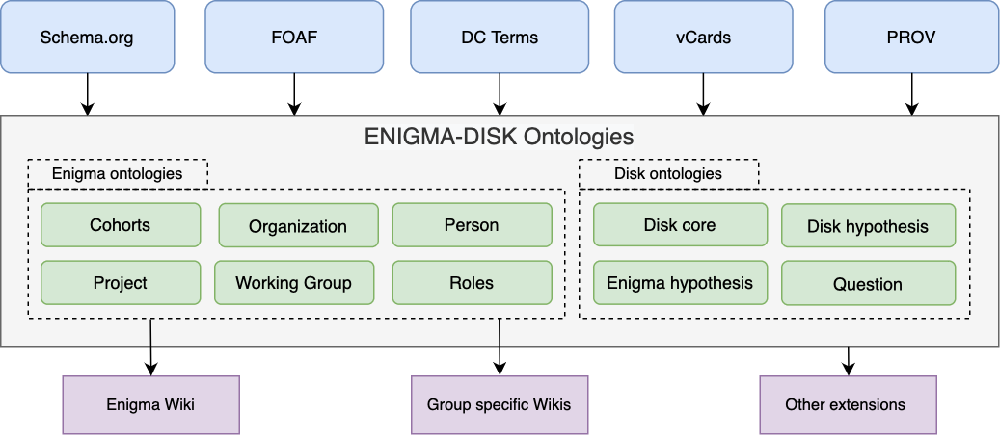

The DISK system implements the DISK ontology and imports several others.
The Enigma-DISK project contains both, the enigma ontologies, and disk ontologies. Several external ontologies are included and the generated vocabularies used on different extensions.
The diagram shows:
The DISK ontologies aims to help scientists to test and discover new hypothesis from existing datasets. Scientists define lines of inquiry that represent generic research questions, like the proteins associated to a type of cancer. The lines of inquiry may have multiple hypothesis associated to them, which define a particular instance or aspect of the line of inquiry (e.g., the EGFR protein is associated to colon cancer). Each hypothesis is represented as a connected graph, where the nodes are the different terms that compose the hypothesis and the edges represent the relationships among those terms.
Each of the statements represented in the hypothesis graph can be supported by the results obtained after running an experiment. In fact, the hypothesis has a confidence value, which varies depending on the results of the experiments run to test it.
The main vocabularies of the DISK ontologies are: